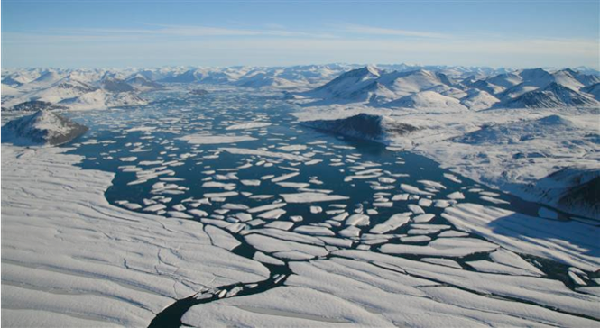

Stefan Problem - Moving Boundary Problem

Comment: In this picture of the Ward Hunt Ice shelf, we see a complex example of a moving phase boundary. With Climate Change being a serious issue, analysis of Stefan-type problems, will be crucial in both calculating the melting of artic ice, as well as energy storage in phase change materials such as salt hydrate for clean solar thermal energy.
Abstract: We consider a one-dimensional two-phase Stefan problem, modeling the melting of ice to liquid water. We analyze the error caused by the pseudo-steady state approximation of the temperature profile. The PSS approximation allows estimates for problems with no explicit analytical solution, such as with Newton cooling at the surface. The PSS approximation includes both linear and quadratic shaped temperature profiles.